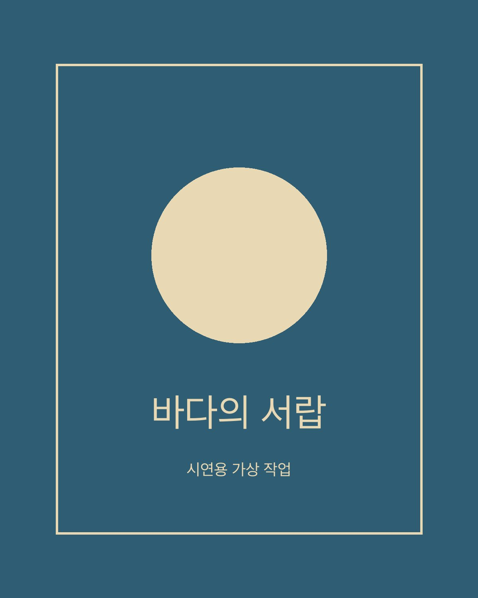
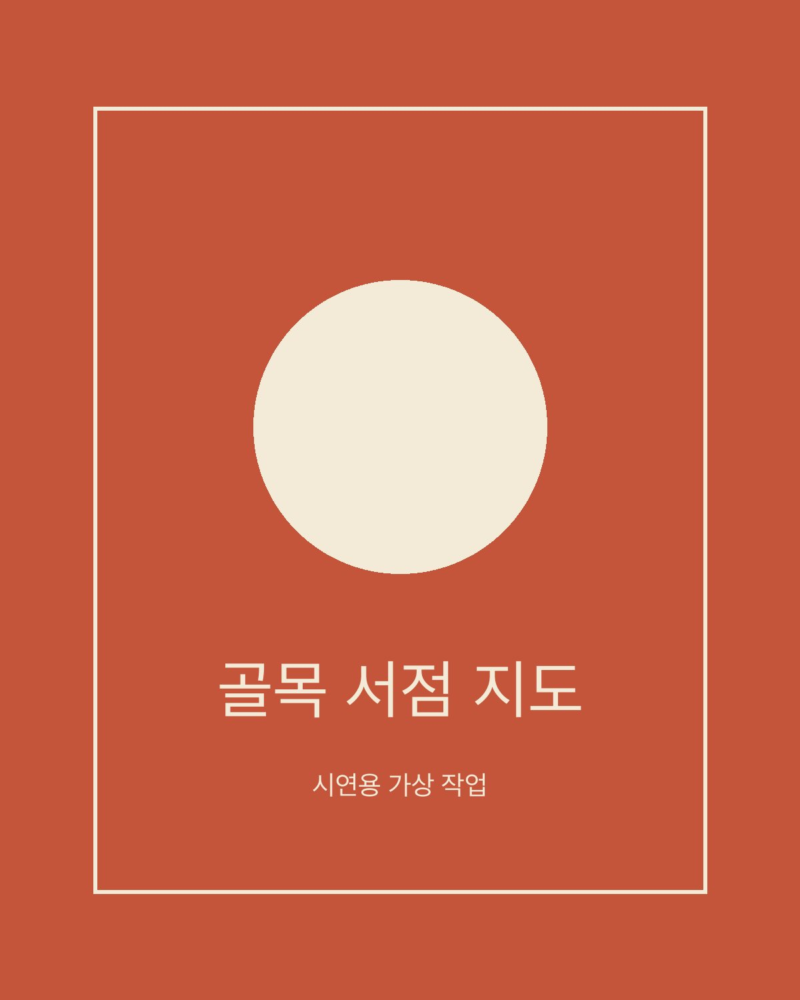
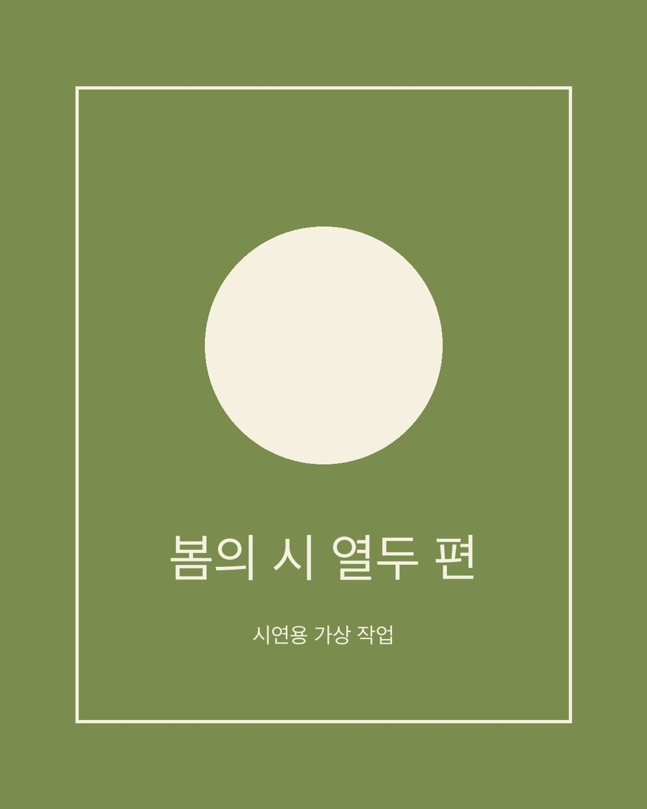

바다의 서랍
바닷가 마을 이야기를 담은 소설집의 표지입니다. 서랍을 열면 바다가 보이는 장면을 둥근 형태 하나로 줄였습니다.

바닷가 마을 이야기를 담은 소설집의 표지입니다. 서랍을 열면 바다가 보이는 장면을 둥근 형태 하나로 줄였습니다.

동네 작은 서점 다섯 곳을 잇는 산책 지도 포스터입니다. 길보다 서점의 분위기가 먼저 보이게 색을 나눴습니다.

시 열두 편을 모은 작은 시집의 내지입니다. 시마다 여백을 다르게 두어 읽는 속도가 달라지게 했습니다.